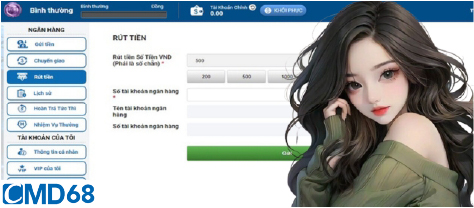
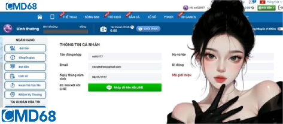
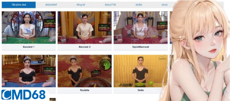

HOMEPAGE / RÚT TIỀN CMD68 - HƯỚNG DẪN CÁCH RÚT TIỀN CHO NGƯỜI CHƠI MỚI
Rút tiền CMD68 – Hướng dẫn cách rút tiền cho người chơi mới
Rút tiền CMD68 là cách mà người chơi ăn mừng chiến thắng sau khi đạt kết quả mỹ mãn. Tuy nhiên, nhiều cược thủ đã gặp phải vấn đề khi rút tiền mà không nhận được phần thưởng của mình. Vì vậy, bài viết dưới đây sẽ cung cấp thông tin liên quan đến việc rút tiền từ tài khoản nhà cái CMD68 chi tiết nhé.
Bài viết liên quan:
- Thể thao CMD68 là gì? Hướng dẫn cá cược thể thao chắc thắng
- Casino CMD68 – Sòng bạc trực tuyến uy tín số 1 tại Việt Nam
Tổng hợp các điều kiện cần đáp ứng để rút tiền CMD68
Để rút tiền từ nhà cái CMD68 một cách dễ dàng và trơn tru, người chơi cần tuân theo các điều kiện quy định sau đây. Mục đích là giúp đảm bảo an toàn cho mọi đối tượng người tham gia:

- Hiện tại, nhà cái CMD68 chỉ cho phép rút tiền về tài khoản ngân hàng chính chủ. Do đó, anh em cần có tài khoản ngân hàng cá nhân để thực hiện việc rút tiền.
- Nếu sử dụng tài khoản không chính chủ, số tiền muốn rút của mọi người sẽ bị tạm thời khóa.
- Đồng thời, tài khoản ngân hàng của người chơi cần phải liên kết với tài khoản cá cược chính chủ tại CMD68 và thuộc vào top những ngân hàng được liên kết.
- Cược thủ cũng cần thực hiện thao tác nạp tiền vào tài khoản ít nhất một lần trước khi có thể rút tiền CMD68. Điều này giúp đảm bảo việc rút tiền diễn ra một cách thuận lợi đúng theo quy định của nhà cái.
Hướng dẫn các bước rút tiền CMD68 chuẩn xác nhất năm 2024
Để rút tiền từ tài khoản nhà cái CMD68, người chơi cần đăng nhập vào giao diện chính thức bằng đường link được cung cấp. Trước khi click vào link, hãy kiểm tra kỹ để đảm bảo an toàn vì có thể bị chặn hoặc gặp phải các link lừa đảo.

Sau khi đăng nhập thành công, anh em chọn mục rút tiền và điền đầy đủ thông tin. Như số tiền cần rút (lược bỏ 3 số 0 ở cuối), ngân hàng giao dịch, chi nhánh ngân hàng, số tài khoản ngân hàng và số điện thoại của mọi người.Sau khi điền thông tin, cược thủ cần phải kiểm tra lại và xác nhận lệnh rút tiền CMD68. Nếu thông tin hợp lệ và số tiền rút đáp ứng yêu cầu của nhà cái thì tiền sẽ được chuyển về tài khoản trong vòng 10 – 15 phút.
Tại sao các lệnh rút tiền CMD68 bị báo không thành công?
Có những tài khoản rút tiền từ nhà cái CMD68 đã gặp phải trường hợp giao dịch không thành công, trái ngược với các tài khoản thuận lợi hoàn tất. Vậy nguyên nhân tại sao lại xảy ra vấn đề rắc rối này?
Thông tin của cược thủ có sự sai lệch với lúc đăng ký
Mọi người hoàn toàn có thể sử dụng biệt danh hoặc tên giả khi chơi, nhưng khi cung cấp thông tin cá nhân thì cần phải sử dụng tên thật. Đặc biệt là thông tin đó phải trùng khớp với tên đã đăng ký tại tài khoản ngân hàng.

Nếu anh em muốn thay đổi tài khoản ngân hàng để nhận tiền thì cần phải cập nhật thông tin và thực hiện lại giao dịch rút tiền CMD68. Nếu có rắc rối phát sinh thì cược thủ lập tức liên hệ với bộ phận hỗ trợ viên nhé.
Sử dụng tiền khuyến mãi không đúng quy định
Có một số thành viên gặp vấn đề khi rút tiền CMD68 báo giao dịch không thành công nhưng vẫn bị trừ tiền. Nguyên nhân có thể do việc sử dụng tiền khuyến mãi không đúng cách.
Cụ thể, các chương trình khuyến mãi đều có quy định rõ ràng về việc áp dụng cho loại hình cá cược cụ thể nào và khung thời gian nào. Do đó mọi người không được sử dụng chúng cho các trò chơi khác.
Nếu lỡ sử dụng không đúng mục đích, nhà cái sẽ hủy vé cược và thu lại tiền khuyến mãi. Điều này rất dễ khiến người chơi lầm tưởng là bản thân rút tiền bị trừ. Khi gặp vấn đề này, bạn nên liên hệ trực tiếp với bộ phận chăm sóc người chơi để được hỗ trợ tốt nhất.
Cược thủ chưa đủ điều kiện để rút tiền CMD68
Nếu bạn không thể rút tiền CMD68 thì có thể do bạn chưa đáp ứng đủ các yêu cầu của nhà cái. Lúc này mọi người cần xem xét xem lại sau khi đăng ký và cá cược thì bản thân có tham gia chương trình khuyến mãi nào hay không?

Thường thì các chương trình khuyến mãi đều đi kèm với một số yêu cầu nhất định. Điển hình như số lượng vòng cược cần phải hoàn tất hoặc doanh thu tối thiểu mà mọi người phải đáp ứng.Kết luận
Hy vọng rằng bài viết trên sẽ cung cấp hướng dẫn chi tiết cho người chơi mới cách rút tiền CMD68 chính xác nhất. Chúc mọi người luôn có được những trải nghiệm cá cược thành công và thú vị tại nhà cái CMD68 uy tín nhé.